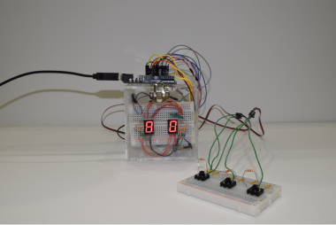

Arduinoを用いて制作
瞬間記憶ゲーム


機能 : Arduinoを用いた瞬間記憶ゲームです。最初に10個のランダムな数字が提示され、それを10秒以内で入力できればゲームクリアです。
背景 : 大学の講義で、arduinoを用いたものを制作するという自由課題があり、それを友人3人で挑戦しました。制作期間としては、約3日間ほどです。最初にアイデア出しを行い、その場にあった7セグメント使って瞬間記憶ゲームを制作することが決まりました。3人の役割としては、ハードウェア制作、回路設計、Arduino言語によるゲーム実装となり、私はArduino言語によるゲーム実装を担当しました。Arduino言語自体はC/C++をベースに設計されております。C言語自体は講義などで学んでおりましたが、初のハードウェア制御だったので、大変勉強になりました。完成したものは、最低限の機能だったので、ゲームとしてはとてもわかりづらいものになってしまいました。今後余裕ができた時に同じ3人で改良を加えたいと考えております。
使用言語、環境 : Arduino,7セグメント
URL : 動画
BACK